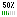
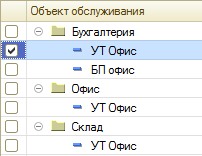

Документ «Регламентное задание»
Документ используется для отображения задач поставленных непосредственно самим клиентом с Web-интерфейса или же куратором. Основной целью данного документа является отобразить взаиморасчеты между исполнителем и заказчиком.
Описание реквизитов шапки:
-
"Организация" - отображает организацию от которой поступает данная задача. При выборе значения, автоматически будут заполнены валюта взаиморасчетов.
-
"Контрагент" - непосредственно сам заказчик задания, которому необходимо предоставить услугу/работу. При выборе значения, автоматически будет заполнена закладка "Объекты обслуживания". Для того, чтобы корректно заполнилась закладка необходимо заполнить список
"Назначение объектов"
-
"Куратор" - кто курирует задание
-
"Исполнитель" - непосредственно сам исполнитель задания, если исполнителей несколько необходимо разбить задания по ним. При выборе значения, автоматически будут заполнены основные реквизиты "Оклад" или "Тариф", а также "Валюта документа". Для того, чтобы корректно заполнилась информация необходимо заполнить список
"Шкала тарифов"
-
"Аналитический признак" - реквизит необязателен для заполнения. Необходим в случае, когда организация требует более сгруппирированной информации по заданиям
- "Состояние" - при создании нового документа, данный реквизит по-умолчанию становится в состояние "В очереди". Зависимость картинок в списке задач от текущего состояния: "Не обработано" ; "В очереди" ; "В работе" ; "Отложено" ; "Отменено" ; "Завершено" ; "Тестируется" 
-
"Важность" - отображает текущую важность, по-умолчанию становится "Средняя"
-
"Количество часов планово" - планово расчетное время на выполнения задания. (Следует заполнять для просмотра отчета
"Динамика нагрузки сотрудников", для анализа отклонения от планнового времени)
-
"Плановая дата сдачи" - на какую дату следует сдать задание
-
"Количество часов затрачено" - суммарное количество затраченного времени на задание. Реквизит не доступен для редактирования, заполняется автоматически при заполненни реквизита "Количество часов" табличной части "Этапы решений"
-
"Сумма документа" - отображает сумму текущего долга перед сотрудником если данный вид расчета ведется по тарифу. Сумма отражена в валюте документа и расчитана по:
Цена часа * Количество часов затрачено
-
"Дата сдачи работ" - фактическая дата сдачи работ (обязателен для заполнения, когда состояние "завершено")
-
"Тема события" - краткое содержание о задании (обязательно для заполнения)
-
"Описание задания" - текстовое поле для подробного описания задания (обязательно для заполнения)
Описание табличных частей:
"Этапы решений"
-
"Типовое решение" - элемент содержит информацию о перечне типовых решений для указанных объектов обслуживания. В конкретном объекте обслуживания можно указать некие типовые решения например: "создание нового пользователя", "Настройка доступа", "Написание обработки". Это решение будет использовано как заголовок при печати
"ЛУРВ" или задания. Если для объектов обслуживания текущего контрагента не указать типовых решений то и выбрать их в документе будет не возможно
-
"Подробное описание" - текстовое поле для подробного описания решения задания
-
"Количество часов" - количество часов необходимо указать в стократной системе, например 10 минут будут равны 0,17 часа, для облегчения расчета можно воспользовотся расчетом времени нажав на поле кнопку выбора или F4, по которой откроется обработка
"Калькулятор времени"
-
"Дата исполнения" - при длительном исполнении задания, если оно заняло несколько этапов следует заполнить этот реквизит для более детальной информации даты решения задания. В любом случае даже при совпадении даты исполнения с датой завершения задания рекомендуется использовать заполнения даты, чтобы потом можно было конкретно отследить данную информацию.
"Объекты обслуживания"
Данная закладка содержит дерево объектов обслуживания в виде: Подразделение контрагента - Объект обслуживания. А также реквизит "Контактное лицо контрагента", которое отображается в печатных формах для видимости, кто непосредственно постановил задачу.
Например:

Если данное древо не заполнено, то по текущему контрагенту не заполнен список "Назначение объектов". Данное древо необходимо для отображения в печатных формах "ЛУРВ" или задания по каким объектам были наданы услуги/работы
"Прикрепленные файлы"
Содержит перечень прикрепленных файлов к текущему заданию. Прикрепление файлов и их чтение доступно также при работе с Web-интерфейса. При обмене данными, также участвуют в обмене.
Важно. Данная закладка активна только при записанном документе.
"Обсуждения"
Содержит список возможных обсуждений или замечаний к исполнению задания.
Web-интерфейс
При работе клиента с созданием заданий, ему открывается специализированная форма с отбором заданий только под текущего контрагента. По-умолчанию применена раскраска текста и фона строк в зависимости от состояния заданий. По-умолчанию скрыты задания, которые находятся "В очереди", "В работе", "Тестируются". Для возможности отображаения всех задач по их состоянию необходимо взвести флаг "Отобразить все задачи". Пользователю доступны для редактирования поля: "Исполнитель", "Тема события", "Описание задания", "Прикрепленные файлы". Данные содержащие денежные расчеты между сотрудником и организацией пользователю недоступны ни в каком виде.
Важно. При необходимости прикреплять файлы следует просто нажать "записать" и вкладка становится активной. При проведении документа какие-либо возможности добавить или изменить пользователю становлятся недоступными.
Обмен данными
Для скрытия базы о ведении расчетов со "своими" клиентами можно использовать обмен данными. При этом обмениваются только задачи и необходимые реквизиты для корректного отображения в списке задач. Настройку обмена необходимо сделать в подсистеме "Настройка и администрирование" - "Обмен данными" - "Обмен задачами". При корректной настройки обмена, можно в списке задач выбрать подменю "Обмен данными" и воспользоваться либо загрузкой задач либо выгрузкой. При выгрузке задач, выгружается текущая задача на которой спозиционированна мышь. При необходимости одновременно выгрузить несколько задач следует их выделить в список зажимая при этом "Shift" или "Ctrl". Загрузка задач происходит из места хранения файлов. При почтовой загрузке, все файлы автоматически помещаются на файловый ресурс, а потом загружаются. Распознавание файлов от других происходит методом перебора элементов узлов обмена данными и сопоставления их имен.
Важно. При выгрузке задачи если не использована почта, то создается файл и если нажать выгрузку еще раз то файл будет перезатерт текущей задачей.